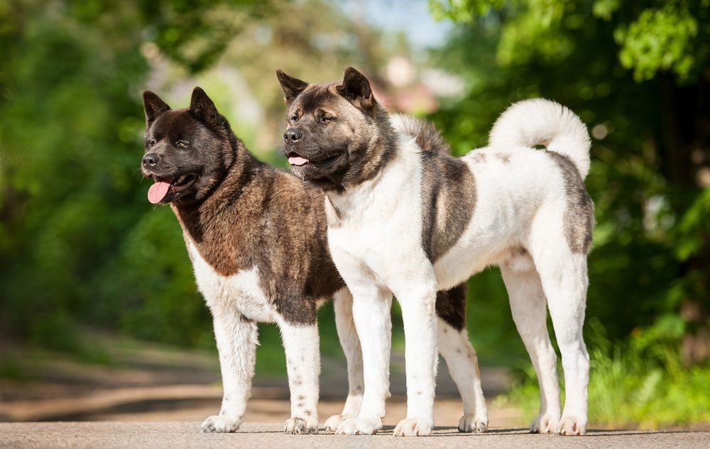

Muito conhecido por sua aparência poderosa, o Akita Inu é um dos grandes nomes entre os cachorros que possuem a fidelidade aos seus tutores como característica principal. Não é à toa que a raça seja tão famosa e requisitada. Obstinado e tenaz, esse cachorro cheio de coragem tem tudo para conquistar sua família humana e é um excelente companheiro quando em boas mãos. Por isso, ao adotar, é fundamental ter em mente todos os cuidados e maneiras corretas de lidar com o animal. Saiba tudo sobre Akita em nosso guia!
O Akita Inu é um dos cachorros mais antigos da história. Originária do Japão, a raça surgiu cerca de 3000 anos atrás. Alguns criadores acreditam que muitos de seus exemplares já existiam antes na Europa e, posteriormente, tiveram sua genética aprimorada pela nação oriental. Os Akitas são grandes, imponentes, independentes e protetores. Eles comumente são usados como cães de guarda devido a essas características. Na maioria das vezes, são cachorros bastante silenciosos, que latem apenas em último caso ou quando algo chama muito a sua atenção. Hoje podemos ver vários Akitas trabalhando como cães policiais no Japão justamente pelo seu comportamento e forma de lidar com as mais variadas situações. Há quem acredite que o akita seja descendente direto dos cães spitz. Seu tamanho, porém, é bem diferente do deles, se destacando por muito tempo como um cachorro de caça. Era comum que eles caçassem ursos e outros animais grandes na província de Akita, ilha que deu origem ao seu nome.
Por se tratar de uma raça um tanto obstinada e independente, é fundamental ficar de olho em certos comportamentos de teimosia. O tutor deve trabalhar logo cedo com a socialização do animal, por meio de adestramento e da definição de hierarquia na casa. Ele pode ser possessivo caso tenha muita permissividade. Outro ponto interessante é que ele fica mais aberto a aproximação de desconhecidos se educado ainda quando filhote. O cachorro pode viver bem em apartamentos, mesmo que o ideal seja uma casa com maior espaço para uma rotina de atividades físicas.
Fizemos um gráfico nivelando de 0 a 5 as características da raça, veja a baixo!
A testa do Akita é larga e o focinho é moderadamente comprido e forte, mas não pontudo. Os olhos são relativamente pequenos e triangulares, assim como as orelhinhas, que são grossas e arredondadas nas extremidades. O cachorro da raça Akita é conhecido por sua postura elegante e vivaz. Ele possui uma constituição robusta, balanceada e firme. Com porte grande, o cão apresenta dorso reto e forte, lombo largo e musculoso, além de peito profundo. A cauda é alta e grossa, enrolada sobre o dorso.
O Akita, apesar de ter hábitos de auto-limpeza, requer cuidados específicos em relação aos banhos. Recomenda-se uma limpeza a cada três meses, podendo ser ajustada com a aprovação veterinária em casos de sujeira excessiva de pelo volumoso. Banhos frequentes podem prejudicar a saúde do animal. Além da atenção à pelagem, é crucial cuidar dos dentes, unhas e realizar a limpeza semanal das orelhas com produtos específicos. Passeios diários de 20 a 30 minutos são essenciais para manter o Akita saudável e evitar o sedentarismo. Criadores devem estar atentos a possíveis complicações de saúde, como displasia de quadril e cotovelo, dermatites e problemas oculares, buscando diagnóstico e tratamento rápidos.
Assim como acontece com outras raças, ter um Akita filhote em casa demanda certos cuidados, inclusive antes do pequenino chegar. Adapte o ambiente em que o novo integrante da família vai ficar e proteja pontos que podem ser perigosos para ele, como portas, escadas, móveis e demais objetos. Lembre-se de cuidar da carteirinha de vacinação do seu filhote. Ele deve estar devidamente imunizado e vermifugado. Assim, o bichinho pode crescer de forma saudável e feliz ao seu lado!